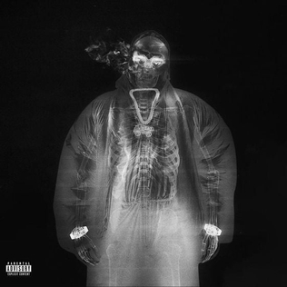
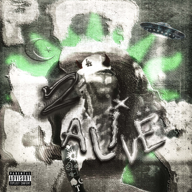

Noah Olivier Smith (született 2000. február 26-án), szakmai nevén Yeat, egy amerikai rapper, énekes, dalszerző és lemezproducer, aki kísérleti hangzásáról ismert. Nem szokványos divatot hordoz, amely dizájner márkák és turbánok keverékét tartalmazza. Saját, egyedi nyelvezetet is csinált, gyakran olyan kitalált szavakat használ, mint a "twizzy" és a "tonka".
Yeat 2015-ben kezdte pályafutását, eredetileg Lil Yeat néven, de ezeket a kiadványokat azóta törölték az internetről. 2018. június 30-án Yeat először mutatkozott be a nyilvánosság előtt jelenlegi beceneve alatt, és bemutatta a "Brink" című számot, az akkori YouTube-csatornáján, "Elevator"-on . Yeat kijelentette, hogy a Yeat nevet bedrogozva hozta létre, és megpróbált egy olyan szót kitalálni, amely ismerősen cseng az emberek számára. Művésznevét a "yeet" és a "heat" kombinációjaként hozta létre. Yeat megemlítette, hogy az LSD-használata segítette őt zenei karrierjének folytatásában. 2018. szeptember 20-án adta ki első mixszalagját, a Deep Blue Strips-t.
Híres albumjai
| Kép | Név | Leírás | Megjelenési idő |
|---|---|---|---|
|  | AftërLyfe |
|
2023. február 24. |
|  | 2 Alivë |
| 2022. február 18. |
| Up 2 Më |
|
2021. szeptember 10. |